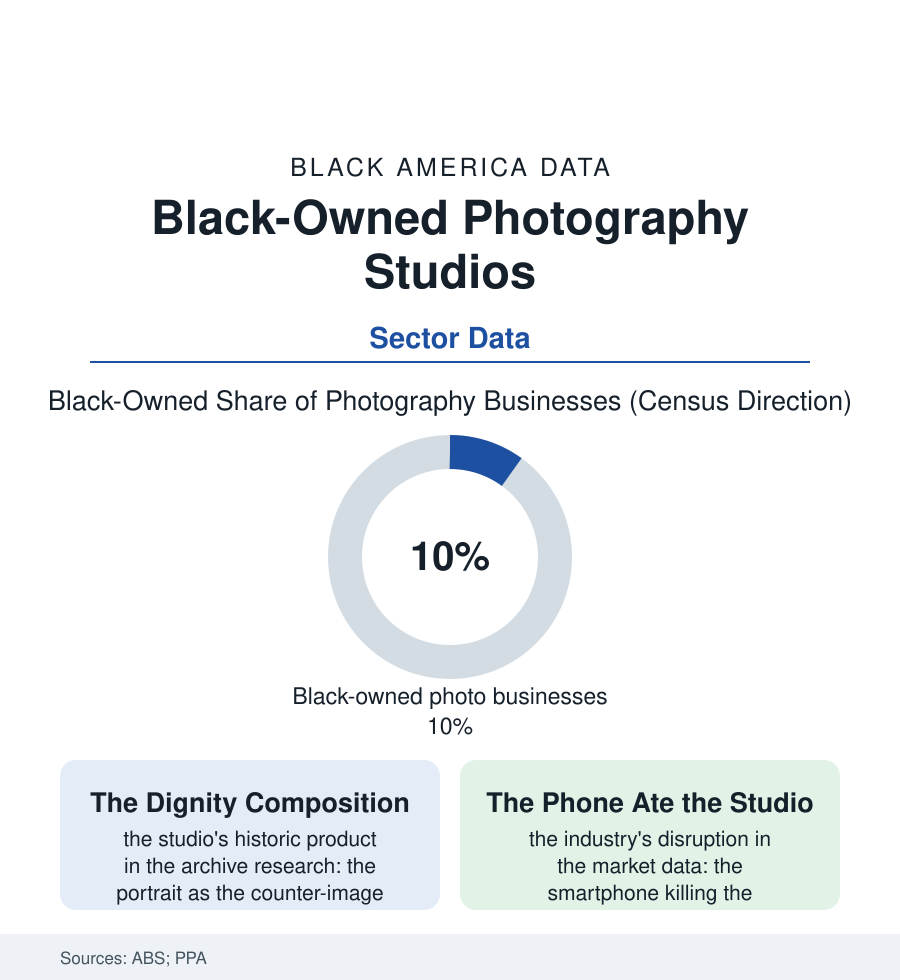

Black Business
The Portrait Studio: Black Photographers and the Archive They Built
For a century the Black portrait studio was the community's official memory — the backdrop, the props, the dignity composed — and its heirs now shoot the weddings, the brands, and the covers. The photography file.

Every Black family archive in this atlas begins the same way: with a studio portrait — the grandparents in their wedding clothes before a painted backdrop, the baby on the bearskin, the graduate with the scroll. For a century those images were made, overwhelmingly, by Black photographers in Black-owned studios, the community's official memory-keepers. The trade has been disrupted past recognition. The file remains. This article reads the photography file.
The Studio as Institution
The historic studio's role is documented in the archives it created: the portraitist of the business district — the Scurlocks of Washington and their peers in every city of this book — operating simultaneously as artist, journalist, and registrar, the studio's negative files becoming, in the museums' current acquisition data, among the most valuable visual records of Black American life in existence, precisely because the studio photographed everyone: the wedding and the union hall, the debutante and the numbers runner, the church anniversary and the nightclub act, respectability and its discontents developed in the same tray. The portrait's product was composition in both senses — the sitter composed, dignity assembled from the backdrop and the borrowed props and the photographer's direction — the counter-image manufactured weekly against the caricature economy of the era's mass media, the family's proof of itself filed in the strongbox. The business model ran on the community's ceremonial calendar (the Easter sitting, the graduation, the wedding album's gilt volumes) and the photographer's civic position: the man with the camera at every event, his archive growing into the town's memory entire. The trade's mid-century ranks included the documentarians the art file now canonizes — the studio men and photojournalists whose frames became the civil-rights era's evidence — a reminder that the portrait studio and the movement's camera were staffed, substantially, by the same apprenticeship.
The church directory photograph deserves its line: the annual directory sitting — the whole congregation in its Sunday best, family by family, in the fellowship hall — producing the era's most complete visual census of the Black community, a dataset the genealogists of the 1870-wall file now mine like a seam. The studio that shot the directories was, directory by directory, enumerating the nation within the nation. The census taker came every ten years. The photographer came every fall.
After the Phone
The disruption arrived in two waves in the market data: the digital camera killing the film lab's economics, then the smartphone killing the sitting itself — the portrait's scarcity value, the studio's foundation, evaporating into everyone's pocket, the industry's firm count and revenues in the census codes falling across the decade like the video store's before it. The survivors' map is the file's modern chapter: the wedding at the top (the celebration economy's premium tier — the Black wedding's photographic budget in the wedding file's data underwriting the studio's reincarnation as the event house), the brand and content economy beside it (the business file's every firm needing the shoot — the product, the founder, the campaign — the Black commercial photographer feeding the same community's enterprises his grandfather's studio served at the counter), the school-and-church contract volume underneath, and the fine-art summit where the studio tradition's heirs hold museum retrospectives. The new gates are the era's: the algorithm's portfolio (the feed as the storefront, the booking in the DMs), the gear's rental economics, the AI file's arrival in the editing suite — and the counterweight, as ever in this book, is the trust: the family that returns to the same photographer for the christening, the graduation, and the homegoing, three generations in one studio's books, a retention no platform has learned to copy. The census counts the photography codes' firms with a Black share near the population's — among the business file's best. The archives explain why the share matters beyond the revenue: a people that kept its own image, in its own studios, for a century of hostile lenses, owns a visual memory no other archive can sell it. The portrait still hangs in the front room. The file notes that the front room is the museum.
Reading the Photography Data
The photography file is the business section's memory department: the firm whose product was the community's face, kept straight. The census counts the studios. The mantel — three generations, one backdrop's descendants, in matching frames — counts the institution, and asks to be dusted.
More in Black Business
Black-Owned Businesses: Counts, Receipts, and the Representation Gap
About 161,000 Black-owned employer firms and three million solo ventures: how the Census Bureau counts Black business ownership, where firms concentrate, and the gap between population share and business share.
Black Median Net Worth: The Wealth Gap in Federal Reserve Data
The Federal Reserve puts Black median family net worth at $44,900, against $285,000 for White families — about 16 cents on the dollar. The widest gap in economic data.
Black Buying Power: The $1.8 Trillion Consumer Economy
Black buying power is estimated at about $1.8 trillion — larger than the economy of most nations. What the figure measures, who produces it, and what it buys.
Source: U.S. Census Bureau Annual Business Survey; Professional Photographers of America data; museum and archive collections research.